تقنية14 دقيقة
هواتف الألعاب 2026: Red Magic 12 Pro+ ضد HONOR WIN 2 ضد iQOO 16 ضد OnePlus 16
أربعة هواتف تستهدف اللاعبين في خريف 2026: Red Magic 12 Pro+ بتبريد مائي مزدوج ومروحة، وHONOR WIN 2 بمروحتي تبريد داخليتين وبطارية 10,100mAh، وiQOO 16 بشاشة 2K بتردد 165Hz وشريحة Q4، وOnePlus 16 ببطارية 9,000mAh وشاشة 185Hz في الألعاب. جمعنا هنا المواصفات الرسمية الكاملة ونتائج الاختبارات الصينية الموثّقة من AnTuTu و三易生活 وZOL و雷科技 و充电头网 وIT之家 و快科技 وTechWeb، إلى جانب ملاحظات الملّاك في الأسابيع الأولى.

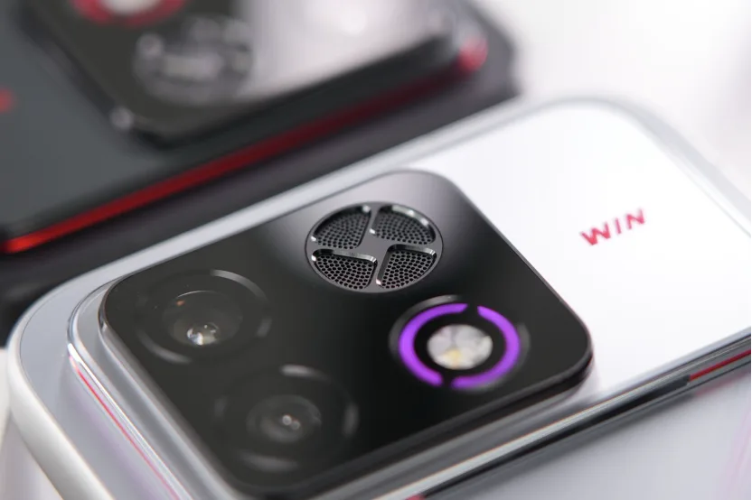

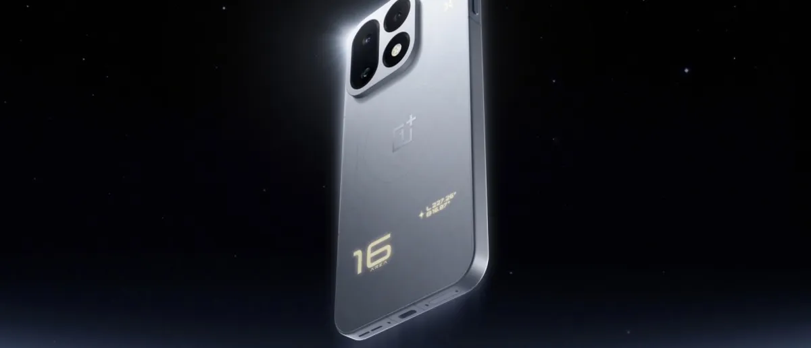
جدول المقارنة الكامل
| المعيار | Red Magic 12 Pro+ | HONOR WIN 2 | iQOO 16 | OnePlus 16 |
|---|---|---|---|---|
| المعالج والشرائح المساندة | Snapdragon 8 Elite Extreme Gen 6 + شريحة الألعاب RedCore R5 + شريحة العرض G1 | Snapdragon 8 Elite Gen 6 Extreme Edition + شرائح WIN Display وWIN Touch وC3 | Snapdragon 8 Elite Extreme Gen 6 + شريحة الألعاب Q4 | Snapdragon 8 Elite Extreme Gen 6 + شرائح T3 (لمس) وG3 (شبكة) وP4 (عرض) |
| الذاكرة والتخزين | LPDDR5T + UFS 4.1 Pro | LPDDR5X Ultra + UFS 4.1 | LPDDR5X Ultra (وUltra Pro في 16+1TB) + UFS 4.1 | LPDDR5X Ultra + UFS 4.1 |
| الأبعاد (الطول × العرض × السماكة) | 163.03 × 75.96 × 8.55 مم (PConline) | 163 × 78 × 8.5 مم (AnTuTu) | 163.75 × 76.90 × 8.30–8.55 مم حسب اللون (vivo) | 161.42 × 76.67 × 8.45–8.55 مم حسب اللون (OnePlus) |
| الوزن | 223 غرامًا | 237 غرامًا | 222.5–229.8 غرامًا حسب اللون | 217–220 غرامًا حسب اللون (قيست 223.9g في 充电头网) |
| الشاشة والدقة | 6.85 بوصة AMOLED مسطحة (BOE X11)، 2688×1216 (1.5K)، 185Hz، بلا ثقب كاميرا، حواف 0.96 مم | 6.89 بوصة LTPS OLED مسطحة (Visionox)، 3104×1440 (2K)، 185Hz، حواف 0.93 مم | 6.85 بوصة AMOLED مسطحة (Samsung M16، 2K LEAD 2.0)، 3168×1440 (2K)، 165Hz | 6.78 بوصة LTPO OLED مسطحة (BOE X4)، 2772×1272 (1.5K)، 1–165Hz عام و185Hz في الألعاب، حواف 1.15 مم |
| السطوع (رسمي / مُقاس في AnTuTu) | رسمي: 1,900 شمعة HBM و5,000 ذروة / مقاس: 662 عادي و936 تحت الشمس | رسمي: 2,000 شمعة كامل الشاشة، 6,000 (20% APL)، و10,000 ذروة | رسمي: 2,800 شمعة كامل الشاشة و10,000 ذروة / مقاس: 1,142 يدوي و2,749 تحت الشمس | رسمي: 1,000 شمعة عادي و2,000 شمعة HBM، مع حد أدنى 1 شمعة |
| التعتيم وحماية العين | 2592Hz PWM في السطوع المنخفض + DC في السطوع العالي | 5920Hz PWM شامل الترددات (3840Hz افتراضي) + استقطاب دائري 2.0 + 1 شمعة | تعتيم DC كامل السطوع + شاشة بلا طبقة استقطاب + 3 مستشعرات إضاءة | 3840Hz PWM (≤70 شمعة) + شبيه DC (>70 شمعة) + 1 شمعة |
| معدل استجابة اللمس والجيروسكوب | لمس 500Hz عام و5000Hz لحظي (Synaptics، Magic Touch 4.0) | لمس 520Hz لـ 10 أصابع و5000Hz لحظي + جيروسكوب 800Hz | لمس 500Hz متعدد الأصابع و5000Hz لحظي (Q-flex) + جيروسكوب فائق الحساسية | لمس 520Hz متعدد الأصابع و4800Hz لحظي (شريحة T3) + جيروسكوب 800Hz |
| التبريد | تبريد مائي مزدوج المسار بمضخة 130kPa (20mW) + مروحة 25,500 دورة/دقيقة + غرفة بخار 4D + معدن سائل 4.0 + غرافين | مروحتان داخليتان (31,000 و20,000 دورة/دقيقة، تدفق 1.19 CFM) + غرفة بخار VC | نظام 8.5K: غرفة بخار أحادية 8,500 مم² + جل حراري 1,190 مم² + غرافين ثلاثي الطبقات 29,453 مم² | نظام 冰河: غرفة بخار 3D VC بمساحة 6,428 مم² + غرافين (2100W/m·K) + جل حراري |
| أزرار الألعاب الجانبية | زرا كتف لمسيان بتردد 700Hz + مفتاح ألعاب أحمر جانبي | زر WIN جانبي فعلي (يعمل زر كتف بـ 3 مستويات حساسية واهتزاز) | لا توجد أزرار كتف (يعتمد على شاشة اللمس والجيروسكوب) | لا توجد أزرار كتف (يضم زر اختصار جانبي ويدعم مقبض ألعاب خارجي) |
| الشحن الالتفافي (Bypass) | مدعوم (شحن تمريري مع خيار الإيقاف بعد 5 دقائق من قفل الشاشة) | مدعوم (فصل الشحن 充电分离 لتغذية اللوحة مباشرة) | مدعوم (تغذية مباشرة شاملة 全局直驱供电 2.0) | مدعوم (تغذية التفافية شاملة لجميع السيناريوهات 全局旁路供电) |
| محرك الاهتزاز والسماعات | محرك خطي 0815 X-axis + سماعتان متماثلتان 1115E مع Dolby Atmos + 3 ميكروفونات | محرك خطي 9593 X-axis + سماعتان متماثلتان 1216 بتجويف 18cc ومضخمي 12V | محرك اهتزاز ثنائي المحور X+Z (Warhammer MAX) + سماعتان متماثلتان Pro | محرك خطي X-axis + سماعتان خطيتان 1510X مع OReality Audio |
| مقاومة الماء والغبار | IP68 / IP69 (وIPX8 للمروحة) | IP68 / IP69 / IP69K (رغم وجود مروحتين) | IP68 / IP69 | IP66 / IP68 / IP69 / IP69K |
| البطارية | 8,400mAh | 10,100mAh (السعة المقدرة 9,850mAh) | 8,400mAh أحادية الخلية (المقدرة 8,170mAh) | 9,000mAh ثنائية الخلايا 2×4,500mAh (المقدرة 8,780mAh) |
| الشحن (سلكي / لاسلكي / عكسي) | 120W / 80W / عكسي سلكي 22.5W | 100W / 80W / عكسي سلكي 27W + عكسي لاسلكي | 100W / 40W / عكسي OTG ولاسلكي | 100W (يدعم 100W UFCS و55W PPS) / 50W / عكسي سلكي 27W ولاسلكي |
| AnTuTu V12 | 5,071,196 (AnTuTu) / 4,835,302 عادي و5,699,552 مبرد (三易生活) / 5.42 مليون (雷科技) | 5,057,718 عادي و5,266,570 مبرد (三易生活) / 5,702,964 (مختبر هونر، IT之家) | 4,713,915 (AnTuTu) / ~4.76 مليون عادي و~5.01 مليون مبرد (三易生活) / 5,574,521 (مختبر vivo) | 4,890,664 (AnTuTu) / 4,721,338 عادي و5,129,235 مبرد (三易生活) |
| Geekbench 6 (نواة / أنوية — 三易生活) | عادي: 3,819 / 11,205 | مبرد: 4,287 / 13,013 | عادي: 3,967 / 11,263 | مبرد: 4,187 / 11,782 | عادي: 3,822 / 11,473 | مبرد: 4,183 / 12,191 | عادي: 4,059 / 11,858 | مبرد: 4,124 / 12,270 |
| 3DMark (Steel Nomad Light / Solar Bay Extreme — 三易生活) | عادي: 3,890 / 2,084 | مبرد: 4,245 / 2,068 | عادي: 4,073 / 2,130 | مبرد: 4,098 / 1,940 | عادي: 3,272 / 1,987 | مبرد: 4,035 / 2,131 | عادي: 3,654 / 2,008 | مبرد: 4,152 / 2,200 |
| Honor of Kings | 145 إطارًا، 3.71W، 40.6°C أمامية / 38.5°C خلفية (AnTuTu)؛ ومع رفع الإطارات 185.2 إطارًا بـ 4.96W (三易生活) | وضع 144: 144.21 إطارًا، 5.00W، 42.3°C أمامية / 41.3°C خلفية (AnTuTu)؛ و144.5 إطارًا بـ 4.16W (三易生活) | وضع 144: 144.29 إطارًا، 3.89W (AnTuTu)؛ ووضع 165: 165.38 إطارًا (WHYLAB عبر Sina) | وضع 165: 167.09 إطارًا، 34.9°C أمامية / 33.6°C خلفية (AnTuTu)؛ و164.6 إطارًا بـ 2.68W (三易生活) |
| Genshin Impact | 60.99 إطارًا، 4.21W، 43.8°C أمامية / 40.4°C خلفية (AnTuTu)؛ و61 إطارًا، 40.5°C خلفية (ZOL) | 60.07 إطارًا، 5.96W، 40.8°C أمامية / 40.7°C خلفية؛ وبمضاعفة 185 إطارًا: 184.85، 8.31W، 45.2°C خلفية (AnTuTu) | 59.83 إطارًا، 3.81W (AnTuTu)؛ و60 إطارًا، 39.5°C (TechWeb)؛ ومع تتبع الأشعة يصل إلى ~10W ويهبط بعد 6.5 دقائق | وضع 180 إطارًا (GPU超帧): 180.58 إطارًا بـ 4.76W و41.4°C (华商网/Tencent)؛ و180.54 إطارًا بـ 5.3W (快科技) |
| Honkai: Star Rail | 60.98 إطارًا، 6.88W (AnTuTu)؛ و60.9 إطارًا بـ 5.45W، ومع توليد الإطارات والمبرد 179.7 إطارًا بـ 7.57W (三易生活) | 59.93 إطارًا، 9.92W، 43.2°C أمامية / 43.8°C خلفية (AnTuTu)؛ و60.0 إطارًا بـ 8.29W (三易生活) | 59.14 إطارًا، 7.32W، ومع توليد الإطارات 89.75 إطارًا بـ 6.71W (AnTuTu)؛ و60.2 إطارًا بـ 5.02W أو 117.3 إطارًا بـ 7.14W (三易生活) | 59.6 إطارًا بـ 6.58W في الوضع الأصلي، ومع توليد الإطارات 87.5 إطارًا بـ 6.32W (三易生活) |
| ألعاب 185Hz / 165Hz | CrossFire (185): 185.98 إطارًا، 4.01W، 44.7°C أمامية / 39.8°C خلفية؛ LoL (2K+185): 185.74، 4.03W؛ PUBG (2K+185): 184.02، 7.04W، 50.3°C (AnTuTu) | Delta Force (185): 184.81 إطارًا، 6.61W، 43.4°C أمامية / 42.8°C خلفية (AnTuTu)؛ و184.2 إطارًا بـ 5.94W، ومع 2K+185: 183.4 إطارًا (三易生活) | Arena Breakout (165): 165.36 إطارًا بـ 4.03W و40.6°C، ومع رفع الدقة 165.60 بـ 3.98W (三易生活)؛ PUBG (165): 164.89 (WHYLAB عبر Sina) | Delta Force (185): 184.82 إطارًا، 43.1°C أمامية / 41.8°C خلفية؛ PUBG (185): 184.56، 39.5°C أمامية / 38.6°C خلفية (AnTuTu)؛ بقدرة 3.76W و5.13W (快科技) |
| Wuthering Waves (鸣潮) | 60.9 إطارًا بـ 4.96W؛ ومع تتبع الأشعة وتوليد الإطارات: 12.69W وحرارة معالج 62.3°C (三易生活) | 59.7 إطارًا بـ 5.50W؛ ومع توليد الإطارات (120): 119.1 إطارًا بـ 7.02W (三易生活) | 59.0 إطارًا بـ 8.27W بأعلى إعدادات (三易生活) | 59.2 إطارًا بـ 6.86W؛ ومع توليد الإطارات: 109.8 إطارًا بـ 7.02W مع تذبذب بعد 15 دقيقة (三易生活) |
| البطارية: 6 ساعات مختلطة (AnTuTu) | بقي 41% | بقي 75% | بقي 68% | بقي 69% |
| اختبارات بطارية إضافية | 3 ساعات ألعاب: بقي 51% (AnTuTu)؛ 5 ساعات مختلطة: بقي 76% (ZOL) | 3 ساعات مختلطة: بقي 68%؛ استنزاف ألعاب متواصلة: 4.8 ساعات حتى الصفر (雷科技) | 3 ساعات مكثفة: بقي 86% (TechWeb)؛ 5 ساعات ألعاب: بقي 63% (Sina) | 3 ساعات ألعاب: بقي 68% (AnTuTu)؛ 4 ساعات مكثفة من 95%: بقي 71% (Tencent) |
| مراحل الشحن وزمن الامتلاء (1%–100%) | 10 د: 26%، 30 د: 64%، 60 د: 95%، كامل: 68 د و40 ث (AnTuTu) / 30 د: 72% (ZOL) / كامل: 73 د (三易生活) | 10 د: 24%، 30 د: 66%، 40 د: 85%، كامل: 54 د بوضع 100W Turbo (三易生活) / 20 د: 50%، كامل: 80 د (雷科技) | 8 د: 20%، 25 د: 50%، 43 د: 80%، كامل: 77 د (充电头网) / 10 د: 17%، 31 د: 48%، كامل: 67 د (三易生活) / 61 د بوضع فائق (منتدى vivo) | 10 د: 30%، 25 د: 58%، 45 د: 91%، كامل: 54 د (AnTuTu) / 10 د: 25%، كامل: 57 د (三易生活) / 8 د: 20%، 24 د: 50%، 41 د: 80%، كامل: 62 د (充电头网) |
| السعر الرسمي الابتدائي | ¥6,999 | ¥5,499 | ¥5,999 | ¥5,999 |
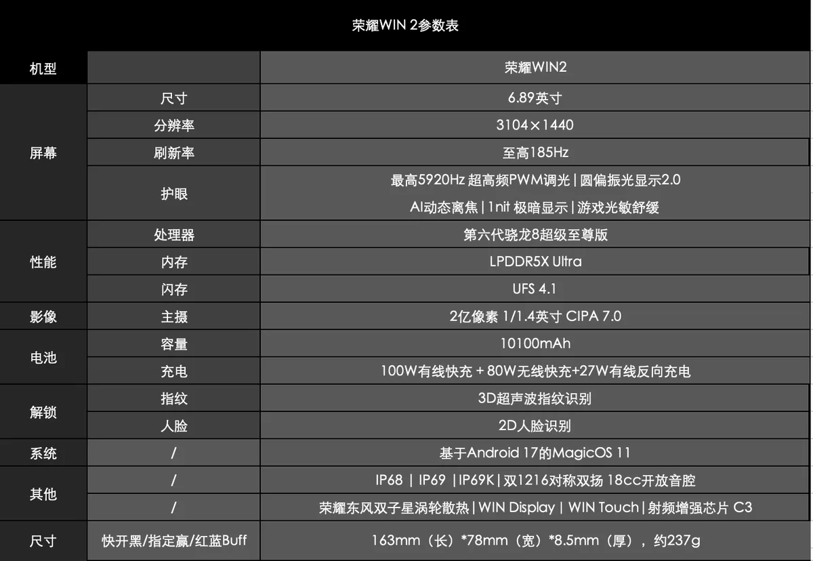
1. الشاشات والأبعاد وتجربة الإمساك
تتباين الهواتف الأربعة في فلسفة العرض وتصميم الواجهة:
- Red Magic 12 Pro+: الوحيد بشاشة كاملة بلا أي ثقب للكاميرا الأمامية (الجيل التاسع من الكاميرا تحت الشاشة مع مادة BOE X11)، بحجم 6.85 بوصة ودقة 1.5K (2688×1216) وتردد 185Hz وحواف 0.96 مم. يتميز بظهر مسطح تمامًا بلا بروز للكاميرات، ووزن 223 غرامًا وسماكة 8.55 مم. في قياسات AnTuTu سجلت الشاشة 662 شمعة يدويًا و936 شمعة في وضع الشمس، مع تعتيم 2592Hz PWM في الإضاءة المنخفضة وDC في الإضاءة العالية.
- HONOR WIN 2: يقدم أكبر شاشة بين الأربعة (6.89 بوصة LTPS OLED من Visionox) بدقة 2K (3104×1440) وتردد 185Hz وأضيق حواف متماثلة (0.93 مم). يدعم تعتيم 5920Hz PWM يعمل عبر الترددات العالية دون هبوط، مع استقطاب دائري 2.0 وسطوع 1 شمعة. في المقابل، هو الأعرض (78 مم) والأثقل (237 غرامًا) بسبب البطارية البالغة 10,100mAh والمروحتين.
- iQOO 16: أول هاتف يجمع دقة 2K (3168×1440) وتردد 165Hz في شاشة 6.85 بوصة من سامسونج بمادة M16 وتقنية 2K LEAD 2.0 التي تزيل طبقة الاستقطاب لتقليل استهلاك الطاقة بنسبة 30% (استهلاك اللوحة 145mW عند 150 شمعة وفق vivo و三易生活). حققت الشاشة أعلى سطوع فعلي مُقاس في اختبار AnTuTu: 1,142 شمعة يدويًا و2,749 شمعة تحت الضوء القوي، مع تعتيم DC كامل السطوع.
- OnePlus 16: الأصغر حجمًا والأخف وزنًا (6.78 بوصة، طول 161.42 مم، عرض 76.67 مم، ووزن 217 غرامًا في نسخة الألياف الزجاجية أو 220 غرامًا في نسخ الزجاج). شاشته BOE X4 بدقة 1.5K (2772×1272) وتقنية LTPO تدعم 1–165Hz في كامل النظام وتصل إلى 185Hz في الألعاب المدعومة، مع تعتيم 3840Hz PWM تحت 70 شمعة وشبيه DC فوقها.
2. أنظمة التبريد ومزايا الألعاب الخاصة
ينقسم المتنافسون إلى فئتين واضحتين: تبريد نشط بمراوح مدمجة في Red Magic وHONOR، وتبريد سلبي بغرف بخار ضخمة في iQOO وOnePlus.
- Red Magic 12 Pro+ (تبريد مائي + هوائي): يجمع نظام ICE 4.0 بين مسارين للتبريد المائي بمضخة خزفية مزدوجة (ضغط 130kPa واستهلاك 20mW فقط) مع إضاءة RGB، ومروحة 驭风 5.0 بسرعة 25,500 دورة/دقيقة ومقاومة ماء IPX8، إضافة إلى غرفة بخار 4D ومعدن سائل 4.0 وغرافين. يضم زري كتف لمسيين بتردد 700Hz ومفتاح ألعاب جانبي، ومحرك اهتزاز 0815 وسماعتي 1115E، ومحاكي ألعاب حاسوب (PC) يدعم تشغيل ألعاب Steam محليًا.
- HONOR WIN 2 (مروحتان داخليتان): يبتكر نظام «东风双子星» بمروحتين: الأولى عمودية (20,000 دورة/دقيقة) فوق المعالج مباشرة، والثانية جانبية (31,000 دورة/دقيقة) متصلة بغرفة البخار VC، بتدفق هواء إجمالي 1.19 CFM مع الحفاظ على مقاومة الماء IP68/IP69/IP69K. في اختبار الضغط العالي لدى AnTuTu، خفض تشغيل المروحتين بالسرعة القصوى حرارة وحدة الكاميرا من 44.3°C إلى 34.4°C (انخفاض 9.9 درجات)، وأقصى حرارة حرارية من 52.6°C إلى 41.7°C (انخفاض 10.9 درجات). يضم زر WIN جانبي فعلي يعمل كزر كتف، وسماعتي 1216 بتجويف 18cc، وجيروسكوب 800Hz.
- iQOO 16 (غرفة بخار 8,500 مم² + شريحة Q4): يعتمد على غرفة بخار أحادية الطبقة بمساحة 8,500 مم² مع جل حراري (1,190 مم²) وثلاث طبقات غرافين (29,453 مم²). يفتقر لأزرار الكتف المدمجة، ويتطلب وضع Monster+ الأقصى تركيب مروحة تبريد خارجية، لكنه يتميز بشريحة Q4 التي تدعم رفع الدقة والإطارات وتتبع الأشعة بالتزامن، وكاميرا ألعاب بدقة 8K، ومحرك اهتزاز ثنائي المحور X+Z.
- OnePlus 16 (غرفة بخار 6,428 مم² + ثلاث شرائح): يستخدم نظام «冰河» بغرفة بخار 3D VC مساحتها 6,428 مم² وغل حراري محسّن بنسبة 50% وغرافين فائق التوصيل. يدمج نواة «风驰» في المعالج مباشرة لتوليد الإطارات دون شريحة خارجية، مع ثلاث شرائح مساندة: T3 للمس (520Hz/4800Hz)، وG3 للشبكة، وP4 للعرض، وجيروسكوب 800Hz، ويدعم معايير IP66/68/69/69K.
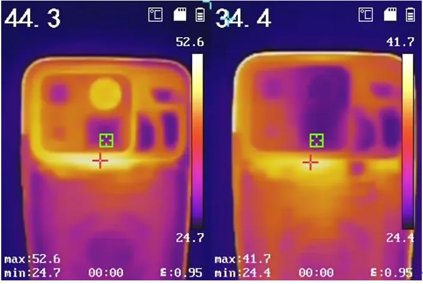
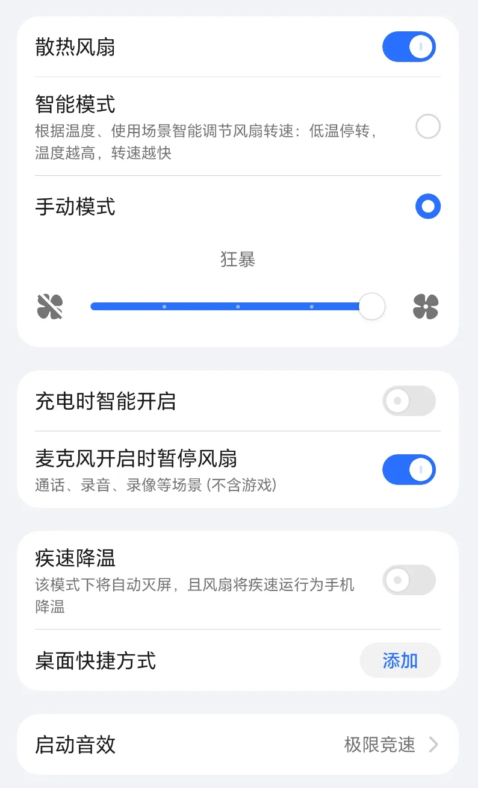
3. اختبارات الأداء الشامل (AnTuTu V12 وGeekbench 6 و3DMark)
تشترك الهواتف الأربعة في معالج كوالكوم الرائد بدقة 2 نانومتر وتردد يصل إلى 5.01GHz مع معالج الرسوميات Adreno 850، لكن الفروق تظهر في سقف التبريد واستقرار الأداء بين حرارة الغرفة والبيئة المبردة:
- Red Magic 12 Pro+: حقق 5,071,196 نقطة في اختبار موقع AnTuTu (CPU: 1,376,270 | GPU: 1,956,971 | MEM: 671,055 | UX: 1,066,900)، ونحو 5.42 مليون في 雷科技. وفي اختبارات موقع 三易生活 سجل 4,835,302 نقطة في حرارة الغرفة وقفز إلى 5,699,552 نقطة في البيئة المبردة، مع Geekbench 6 عند 3,819/11,205 (ومبرد 4,287/13,013)، و3DMark Steel Nomad Light عند 3,890 (مبرد 4,245) وSolar Bay Extreme عند 2,084 نقطة.
- HONOR WIN 2: أعلنت هونر رقمًا مخبريًا يبلغ 5,702,964 نقطة (IT之家 / CNMO). وفي الاختبار المستقل لدى 三易生活 حقق أعلى نتيجة في حرارة الغرفة بين الأجهزة المختبرة لديهم: 5,057,718 نقطة، وارتفع في البيئة المبردة إلى 5,266,570 نقطة بفارق 4.1% فقط (أقل فارق حراري في هذا الجيل؛ إذ لم يرتفع GPU سوى 0.6%). وفي 3DMark Steel Nomad Light سجل 4,073 نقطة في حرارة الغرفة (مقابل 4,098 مبرد)، وفي Solar Bay Extreme سجل 2,130 نقطة، وفي Geekbench 6 سجل 3,967/11,263.
- iQOO 16: سجل 4,713,915 نقطة في اختبار AnTuTu بدرجة حرارة الغرفة (CPU: 1,166,224 | GPU: 1,864,244 | MEM: 713,179 | UX: 970,277)، و4.76 مليون في حرارة الغرفة لدى 三易生活 (5.01 مليون مبرد)، بينما يبلغ رقم مختبر vivo الرسمي 5,574,521. وفي 3DMark سجل 3,272 نقطة في Steel Nomad Light بالوضع العادي وارتفع إلى 4,035 في البيئة المبردة (+23.3% بسبب غياب المروحة)، و1,987 في Solar Bay Extreme (2,131 مبرد)، و3,822/11,473 في Geekbench 6.
- OnePlus 16: حقق 4,890,664 نقطة في اختبار AnTuTu (CPU: 1,345,543 | GPU: 1,979,309 | MEM: 615,255 | UX: 950,557)، وفي 三易生活 سجل 4,721,338 عادي و5,129,235 مبرد (أعلى هاتف بلا مروحة في قائمتهم). كما حقق أعلى نتيجة Geekbench 6 في حرارة الغرفة (4,059 للنواة و11,858 للأنوية)، وفي 3DMark سجل 3,654 في Steel Nomad Light (4,152 مبرد) و2,008 في Solar Bay Extreme. وفي اختبار ضغط 3DMark Wild Life Extreme Stress Test لدى 热点科技 استقرت الحرارة عند 46.9°C أمامية و44°C خلفية.
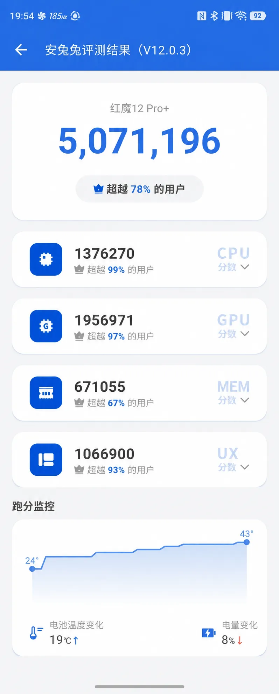

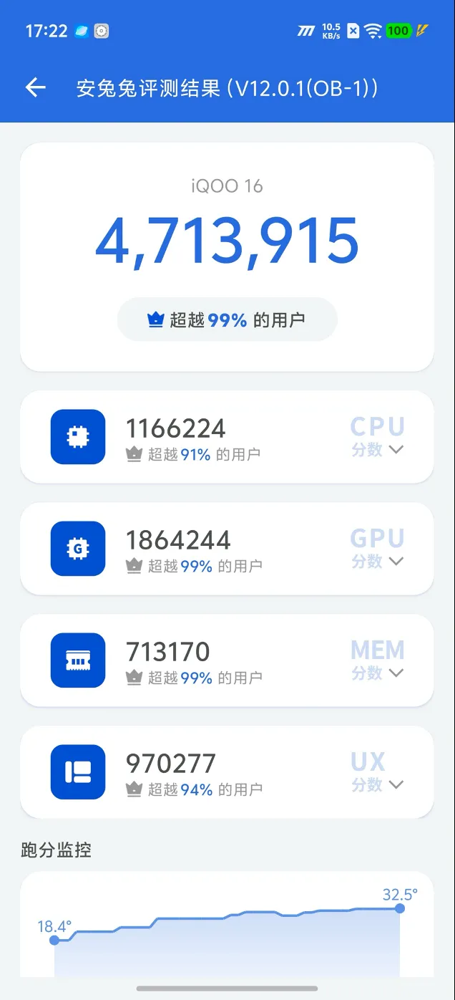
4. اختبارات الألعاب التفصيلية والحرارة واستهلاك الطاقة
ألعاب MOBA والتصويب بتردد 144Hz و165Hz و185Hz
- Honor of Kings: يتفوق OnePlus 16 بتشغيل وضع 165 إطارًا الأصلي بمتوسط 167.09 إطارًا وحرارة لا تتجاوز 34.9°C أمامية و33.6°C خلفية في اختبار AnTuTu (و164.6 إطارًا باستهلاك 2.68W فقط لدى 三易生活). أما Red Magic 12 Pro+ فسجل 145 إطارًا وأدنى 1% عند 144.9 بقدرة 3.71W وحرارة 40.6°C أمامية / 38.5°C خلفية (ومع رفع الإطارات في 三易生活 وصل إلى 185.2 إطارًا بـ 4.96W). وسجل HONOR WIN 2 في وضع 144 متوسط 144.21 إطارًا (1% Low عند 143.2) بقدرة 5.00W وحرارة 42.3°C أمامية / 41.3°C خلفية (ومع الإطارات الذكية في 三易生活 انخفض الاستهلاك إلى 3.86W). وسجل iQOO 16 في وضع 144 متوسط 144.29 إطارًا (1% Low عند 141.8) بقدرة 3.89W، ووصل في وضع 165 إلى 165.38 إطارًا (WHYLAB عبر Sina).
- ألعاب 185Hz / 165Hz (Delta Force وCrossFire وPUBG وArena Breakout):
- في Red Magic 12 Pro+، عملت CrossFire Mobile عند 185.98 إطارًا (1% Low: 182.7) بقدرة 4.01W وحرارة 44.7°C أمامية / 39.8°C خلفية، وعملت League of Legends Mobile بوضع رفع الدقة والإطارات (2K+185Hz) عند 185.74 إطارًا بـ 4.03W وحرارة 45.1°C أمامية. أما PUBG Mobile مع مضاعفة الدقة والإطارات فحققت 184.02 إطارًا بقدرة 7.04W ورفعت الحرارة الأمامية إلى 50.3°C (AnTuTu).
- في HONOR WIN 2، حققت Delta Force بوضع 185 الأصلي متوسط 184.81 إطارًا (1% Low: 181.7) بقدرة 6.61W وحرارة 43.4°C أمامية / 42.8°C خلفية (AnTuTu)، ومع تفعيل دقة 2K الفائقة مع 185 إطارًا في الوقت نفسه لدى 三易生活 حافظ على 183.4 إطارًا.
- في iQOO 16، عملت Arena Breakout بوضع 165 الأصلي عند 165.36 إطارًا بقدرة 4.03W وحرارة بطارية 40.6°C، ومع تفعيل رفع الدقة عبر شريحة Q4 سجلت 165.60 إطارًا بقدرة 3.98W (三易生活).
- في OnePlus 16، حققت Delta Force بوضع 185 متوسط 184.82 إطارًا (1% Low: 137) وحرارة 43.1°C أمامية / 41.8°C خلفية (AnTuTu) وباستهلاك 5.13W (快科技). وفي PUBG Mobile بوضع 185 سجل 184.56 إطارًا وحرارة 39.5°C أمامية / 38.6°C خلفية (AnTuTu) وباستهلاك 3.76W (快科技)، وفي CrossFire بوضع 185 سجل 185.28 إطارًا بـ 4.79W و41.9°C (华商网).
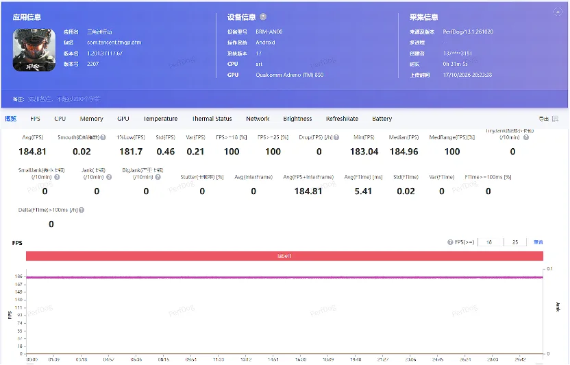
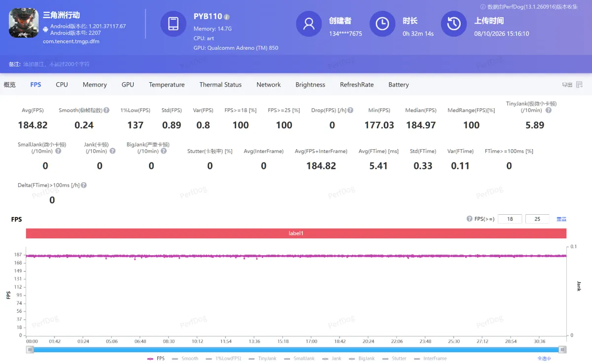
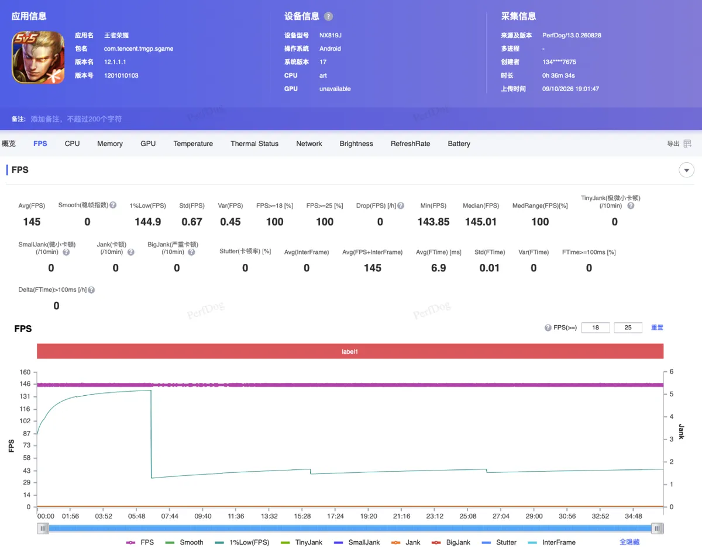
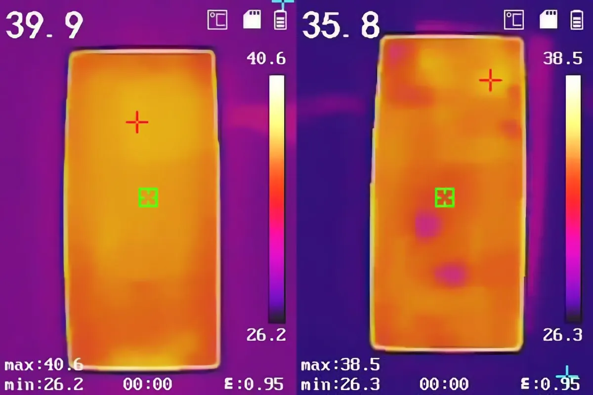
الألعاب الثقيلة (Genshin Impact وHonkai: Star Rail وWuthering Waves)
- Genshin Impact: في الوضع الأصلي (60 إطارًا)، كان iQOO 16 الأكثر كفاءة باستهلاك 3.81W ومتوسط 59.83 إطارًا (AnTuTu) وحرارة 39.5°C (TechWeb)، يليه Red Magic 12 Pro+ بمتوسط 60.99 إطارًا (1% Low: 60.2) بقدرة 4.21W وحرارة 43.8°C أمامية / 40.4°C خلفية في AnTuTu (و40.5°C خلفية في ZOL)، ثم HONOR WIN 2 بمتوسط 60.07 إطارًا (1% Low: 59.5) بقدرة 5.96W وحرارة 40.8°C أمامية / 40.7°C خلفية (و38.9°C على الإطار أثناء اللعب مع الشحن لدى 雷科技). أما في أوضاع مضاعفة الإطارات، فحقق OnePlus 16 بوضع 180 إطارًا (عبر GPU) متوسط 180.58 إطارًا بقدرة 4.76W وحرارة 41.4°C (华商网/Tencent) و180.54 إطارًا بـ 5.3W (快科技)، بينما حقق HONOR WIN 2 بوضع 185 إطارًا متوسط 184.85 إطارًا (1% Low: 171.4) بقدرة 8.31W وحرارة 45.2°C خلفية (AnTuTu). وفي iQOO 16 أدى تفعيل تتبع الأشعة بأعلى إعدادات إلى رفع الاستهلاك لنحو 10W وانخفاض الإطارات بعد 6.5 دقائق.
- Honkai: Star Rail: سجل Red Magic 12 Pro+ متوسط 60.98 إطارًا (1% Low: 58.8) بقدرة 6.88W في AnTuTu (و60.9 إطارًا بـ 5.45W في 三易生活، ومع توليد الإطارات والمبرد الخارجي وصل إلى 179.7 إطارًا بـ 7.57W). وحقق HONOR WIN 2 ثباتًا لافتًا بمتوسط 59.93 إطارًا و1% Low عند 59.7 في AnTuTu، لكن باستهلاك مرتفع بلغ 9.92W وحرارة 43.2°C أمامية / 43.8°C خلفية (وفي 三易生活 سجل 60.0 إطارًا بـ 8.29W). أما iQOO 16 فسجل 59.14 إطارًا بقدرة 7.32W في AnTuTu، وعند تفعيل رفع الدقة والإطارات عبر شريحة Q4 ارتفع إلى 89.75 إطارًا مع انخفاض الاستهلاك إلى 6.71W (وفي 三易生活 وصل بوضع 120 إطارًا إلى 117.3 إطارًا بـ 7.14W). وسجل OnePlus 16 في اختبار 三易生活 متوسط 59.6 إطارًا بقدرة 6.58W في الوضع الأصلي، و87.5 إطارًا بقدرة 6.32W عند تفعيل توليد الإطارات.
- Wuthering Waves (鸣潮) ومحاكي الحاسوب: في اختبار 三易生活 لأعلى إعدادات 鸣潮، سجل Red Magic 12 Pro+ متوسط 60.9 إطارًا بـ 4.96W (ومع تتبع الأشعة وتوليد الإطارات قفز الاستهلاك إلى 12.69W وحرارة المعالج إلى 62.3°C)، وسجل HONOR WIN 2 متوسط 59.7 إطارًا بـ 5.50W (ومع توليد 120 إطارًا: 119.1 إطارًا بـ 7.02W)، وسجل OnePlus 16 متوسط 59.2 إطارًا بـ 6.86W (ومع توليد الإطارات: 109.8 إطارًا بـ 7.02W مع تذبذب بعد 15 دقيقة حتى مع مبرد خارجي)، وسجل iQOO 16 متوسط 59.0 إطارًا بـ 8.27W. وفي تشغيل ألعاب Steam ثلاثية الأبعاد عبر محاكي الحاسوب على Red Magic 12 Pro+ (مثل Outer Wilds في اختبار 雷科技)، وصل استهلاك المعالج إلى 21W وحرارته فوق 90°C وحرارة الإطار إلى 55°C بعد 10 دقائق.
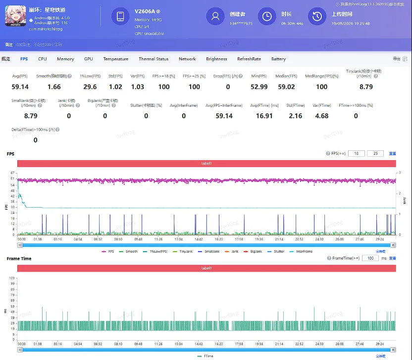
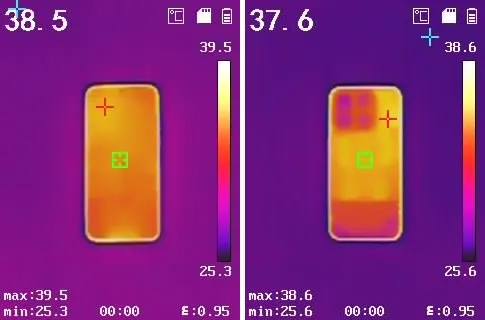
5. البطارية ومراحل الشحن في المصادر المتعددة
تُظهر اختبارات البطارية والشحن فروقًا جوهرية بين الهواتف الأربعة:
- HONOR WIN 2 (10,100mAh): يتصدر اختبار AnTuTu الشامل لست ساعات ببقاء 75% من الشحن (استهلكت ساعة Honor of Kings 8% فقط). وفي اختبار 雷科技 لثلاث ساعات بقي 68%، وصمد 4.8 ساعات من اللعب الثقيل المتواصل حتى نفاد البطارية. في الشحن، سجل 雷科技 وصوله إلى 50% في 20 دقيقة والامتلاء في 80 دقيقة بالوضع العادي، بينما كشف اختبار 三易生活 أنه عند تفعيل وضع «100W Turbo» (بالضغط المطول وسط الشاشة) يصل إلى 13% في 5 دقائق، و24% في 10 دقائق، و66% في 30 دقيقة، و85% في 40 دقيقة، ويكتمل الشحن 100% في 54 دقيقة.
- OnePlus 16 (9,000mAh): حل ثانيًا في اختبار 6 ساعات لدى AnTuTu ببقاء 69%، وفي اختبار 3 ساعات ألعاب متواصلة (ساعة Honor of Kings: -8%، ساعة Genshin: -12%، ساعة Star Rail: -12%) بقي 68%. وفي الشحن السلكي 100W، سجل AnTuTu: 18% في 5 دقائق، و30% في 10 دقائق، و58% في 25 دقيقة، و91% في 45 دقيقة، والامتلاء في 54 دقيقة (و57 دقيقة لدى 三易生活). أما مختبر 充电头网 (في غرفة ثابتة الحرارة 25°C مع إيقاف تحسين الشحن) فسجل ذروة قدرة 74.3W، وشحن 20% في 8 دقائق، و50% في 24 دقيقة، و80% في 41 دقيقة، والامتلاء في 62 دقيقة مع حرارة قصوى لم تتجاوز 39.3°C.
- iQOO 16 (8,400mAh): بقي فيه 68% بعد 6 ساعات في اختبار AnTuTu (استهلكت ساعة Honor of Kings 10%)، و86% بعد 3 ساعات في اختبار TechWeb. وفي الشحن السلكي 100W، وثّق مختبر 充电头网 ذروة قدرة 86.8W، والوصول إلى 20% في 8 دقائق، و50% في 25 دقيقة، و80% في 43 دقيقة، والامتلاء الكامل في 77 دقيقة (مع حرارة 43.2°C عند الدقيقة 30)، بينما سجل 三易生活 الامتلاء في 67 دقيقة (17% في 10 دقائق و48% في 31 دقيقة)، وقاس أحد الملاك في منتدى vivo 61 دقيقة في وضع الشحن الفائق مقابل 79 دقيقة في الوضع العادي.
- Red Magic 12 Pro+ (8,400mAh): رغم تساوي سعة بطاريته مع iQOO 16، فإنه حل أخيرًا في اختبار 6 ساعات لدى AnTuTu ببقاء 41% (استهلكت ساعة Honor of Kings 20%، وساعة التسوق 14%)، وفي اختبار 3 ساعات ألعاب متواصلة بقي 51% (Honor of Kings -7%، Star Rail -21%، Genshin -21%). في المقابل، سجل موقع ZOL بقاء 76% بعد 5 ساعات من الاستخدام المختلط الأقل ضغطًا. وفي الشحن السلكي 120W، سجل AnTuTu الوصول إلى 26% في 10 دقائق، و46% في 20 دقيقة، و64% في 30 دقيقة، و81% في 40 دقيقة، و95% في 60 دقيقة، ثم تباطأ الشحن التكميلي ليكتمل في 68 دقيقة و40 ثانية (وسجل ZOL 72% في 30 دقيقة، وسجل 三易生活 الامتلاء في 73 دقيقة).
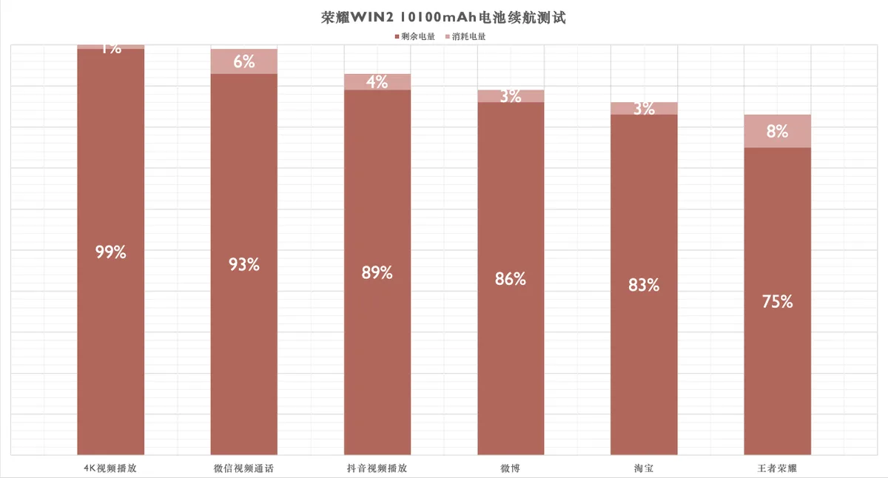
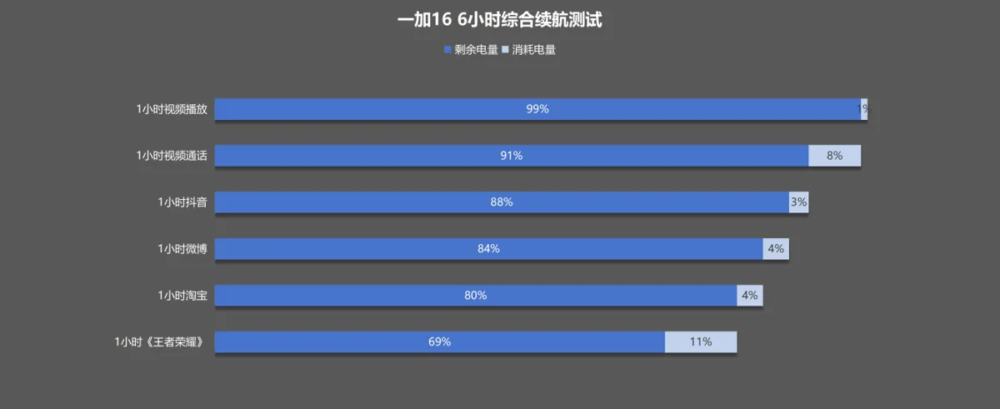
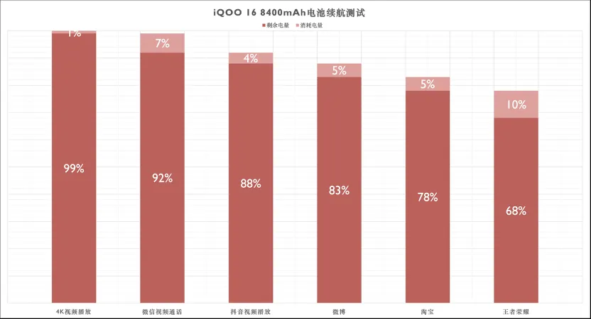
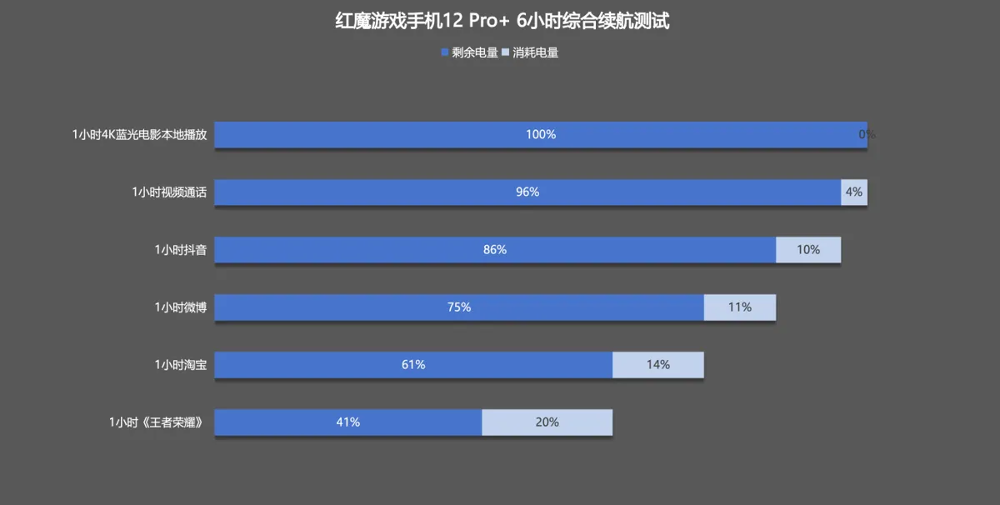
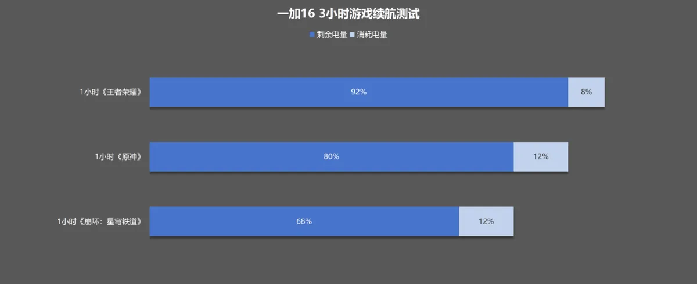
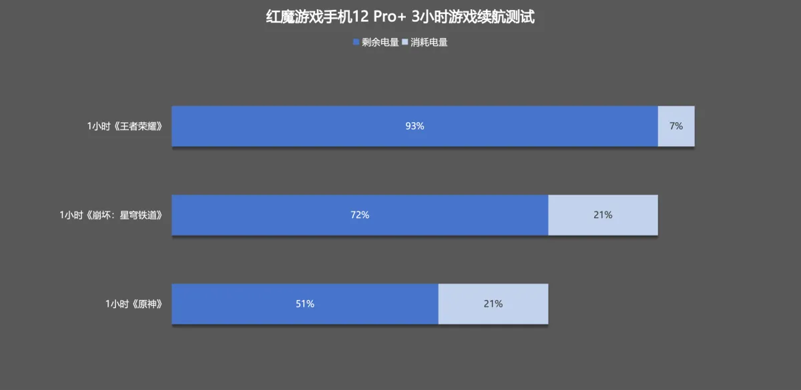
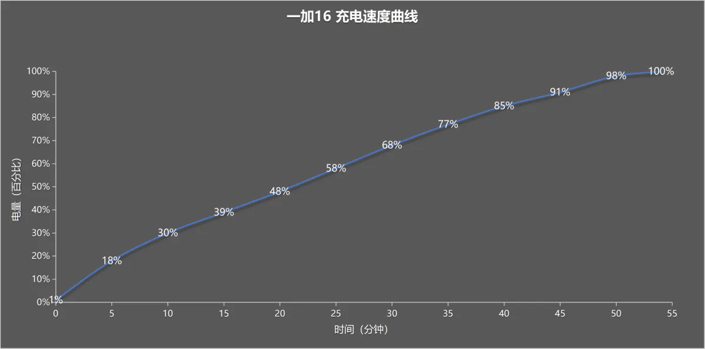
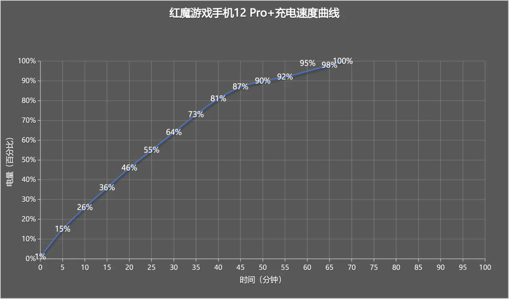
6. آراء الملّاك والعيوب المرصودة في الأسابيع الأولى
- Red Magic 12 Pro+: لم تتوفر بعد تقييمات رقمية على Coolapk أو ZOL لحداثة الطرح (15 أكتوبر). أبرز الملاحظات المبكرة التي رصدها تقرير تجميعي على mamagoods (من Bilibili وZhihu) ومراجعة 雷科技: حالات فردية لإعادة تشغيل النظام وتوقف بعض التطبيقات، وميل طفيف للون الأخضر حول منطقة الكاميرا تحت الشاشة في الإضاءة الخافتة، وعدم تثبيت كثير من ألعاب Steam داخل محاكي الحاسوب، إضافة إلى سخونة شديدة (50.3°C–55°C) عند تشغيل محاكي الحاسوب أو أوضاع مضاعفة الدقة والإطارات القصوى، وغياب عدسة التقريب البصري.
- HONOR WIN 2: أُطلق يوم 21 أكتوبر فلا توجد بعد تقييمات ملاك على Coolapk. أبرز العيوب التي وثّقتها مراجعتا 雷科技 و三易生活: صوت المروحتين عند السرعة القصوى مرتفع ويقترب من صوت حواسيب الألعاب المحمولة (ما قد يزعج أثناء المحادثات الصوتية)، والوزن البالغ 237 غرامًا مع عرض 78 مم يسبب إجهادًا لليد في الجلسات الطويلة، وغياب كاميرا التقريب البصري (يعتمد على قص مستشعر 200MP)، والحاجة إلى تفعيل وضع 100W Turbo يدويًا بالضغط المطول في كل مرة للحصول على الشحن السريع (54 دقيقة بدل 80 دقيقة).
- iQOO 16: حصل على تقييم عام 9.9/10 على ZOL (182 تقييمًا، مع 8/10 في المعايير الفرعية). يمدح الملاك شاشة 2K 165Hz والبطارية، بينما تتركز الشكاوى في: ارتفاع السعر بنحو 1,300 يوان مقارنة بـ iQOO 15، وسخونة الجهاز عند الإمساك الأفقي الطويل مع اشتراط مروحة خارجية لتفعيل وضع Monster+، وإيقاف تتبع الأشعة تلقائيًا في Genshin بسبب استهلاك 10W، وتذبذب لحظي في الإطارات (10–20 إطارًا لأقل من ثانية) لدى بعض المستخدمين قبل التحديثات، وتشويش في تصوير الماكرو 1x.
- OnePlus 16: حصل على تقييم 9.4/10 (ثم 9.3) على Coolapk بحسب PConline وWeibo، مع علامة 9.8/10 للبطارية و9.5/10 للأداء والشاشة، بينما نالت القيمة مقابل السعر أدنى تقييم (8.3/10) بسبب قفزة السعر بنحو 2,000 يوان مقارنة بـ OnePlus 15 (الذي بدأ من 3,999 يوان). ورصد تقرير SMZDM في أول 96 ساعة بلاغات فردية عن انخفاض الإطارات وارتفاع الحرارة بعد التحديث 17.0.0.152 أو بعد 10–15 دقيقة من اللعب المكثف، واختفاء ميزة النوافذ العائمة المتعددة، إلى جانب كون دقة الشاشة 1.5K وليست 2K وغياب نطاق 4G Band 20 في النسخة الصينية.
7. جميع فئات الأسعار الرسمية بالدولار والريال
| الهاتف والنسخة | السعر الرسمي في الصين | بالدولار | بالريال السعودي |
|---|---|---|---|
| Red Magic 12 Pro+ (12GB + 256GB) | ¥6,999 | 1,046$ | 3,924 ريال |
| Red Magic 12 Pro+ (16GB + 512GB) | ¥7,999 | 1,196$ | 4,484 ريال |
| Red Magic 12 Pro+ (16GB + 1TB) | ¥8,999 | 1,345$ | 5,045 ريال |
| HONOR WIN 2 (12GB + 256GB) | ¥5,499 | 822$ | 3,083 ريال |
| HONOR WIN 2 (16GB + 256GB) | ¥5,799 | 867$ | 3,251 ريال |
| HONOR WIN 2 (12GB + 512GB) | ¥6,299 | 942$ | 3,531 ريال |
| HONOR WIN 2 (16GB + 512GB) | ¥6,999 | 1,046$ | 3,924 ريال |
| HONOR WIN 2 (16GB + 1TB — سعر الإطلاق الأول) | ¥7,699 | 1,151$ | 4,316 ريال |
| HONOR WIN 2 (16GB + 1TB — السعر الرسمي) | ¥7,999 | 1,196$ | 4,484 ريال |
| iQOO 16 (12GB + 256GB) | ¥5,999 | 897$ | 3,363 ريال |
| iQOO 16 (12GB + 512GB) | ¥6,799 | 1,016$ | 3,811 ريال |
| iQOO 16 (16GB + 512GB) | ¥7,499 | 1,121$ | 4,204 ريال |
| iQOO 16 (16GB + 1TB) | ¥8,499 | 1,271$ | 4,764 ريال |
| OnePlus 16 (12GB + 256GB) | ¥5,999 | 897$ | 3,363 ريال |
| OnePlus 16 (12GB + 512GB) | ¥6,799 | 1,016$ | 3,811 ريال |
| OnePlus 16 (16GB + 512GB) | ¥7,499 | 1,121$ | 4,204 ريال |
| OnePlus 16 (16GB + 1TB) | ¥8,499 | 1,271$ | 4,764 ريال |
سعر الصرف: 1 يوان = 0.149493 دولار = 0.560594 ريال سعودي (open.er-api.com، تحديث 22 أكتوبر 2026، 04:02 بتوقيت مسقط). الأسعار المحوّلة تقريبية ولا تشمل الشحن والجمارك. في داخل الصين تتوفر عروض إطلاق أول ودعم حكومي يخفض أسعار OnePlus 16 إلى ¥5,699 (أو ¥5,199 بالدعم)، وiQOO 16 إلى ¥5,499 بالدعم، وHONOR WIN 2 إلى ¥4,999 بالدعم، وRed Magic 12 Pro+ إلى ¥6,499 بالدعم، لكن هذه التخفيضات تقتصر على المشترين داخل الصين.
من يشتري أي هاتف؟
- Red Magic 12 Pro+: للاعب المتفرغ الذي يريد شاشة كاملة بلا ثقب، وزري كتف بتردد 700Hz، وظهرًا مسطحًا بلا بروز كاميرات، وأعلى سقف أداء في الألعاب الثقيلة ومحاكي Steam، مع تقبّل استهلاك بطارية أعلى في الاستخدام المختلط (41% بعد 6 ساعات في AnTuTu) وانتظار تحديثات النظام الأولى أو النسخة العالمية في 3 نوفمبر.
- HONOR WIN 2: لمن يريد أطول عمر بطارية فعلي (10,100mAh وبقاء 75% بعد 6 ساعات)، وشاشة 2K بتردد 185Hz وتعتيم 5920Hz PWM، وثبات أداء كامل بفضل المروحتين ومقاومة IP69K، وبأقل سعر ابتدائي (¥5,499)، بشرط تقبّل الوزن (237 غرامًا) وصوت المروحتين وغياب عدسة التقريب البصري.
- iQOO 16: لمن يريد أفضل شاشة 2K من سامسونج (M16 بسطوع فعلي 2,749 شمعة وتعتيم DC كامل) وكفاءة طاقة ممتازة في الألعاب بدون تتبع أشعة (3.81W في Genshin)، مع نظام كاميرات ثلاثي متكامل يضم بيريسكوب 3x ودعم LTE Band 20 المهم في الخليج.
- OnePlus 16: لمن يريد هاتفًا رائدًا متكاملًا وأخف وزنًا (217–220 غرامًا) يجمع بطارية 9,000mAh وشحنًا سريعًا (54 دقيقة) وأبرد حرارة في ألعاب 165Hz/185Hz وكاميرا رئيسية 200MP مع بيريسكوب 3x، دون رغبة في حمل هاتف بمروحة.
تقييمات المصادر الصينية والمراجعات المفصلة
- ريد ماجيك 12 برو بلس: أداء ألعاب ثابت وتبريد مائي مضيء، والنظام نقطة الضعف في أسابيعه الأولى — المصادر: AnTuTu، ZOL، 三易生活، 雷科技.
- هونر WIN Turbo 2 وWIN RT 2 وWIN 2: ثلاثة هواتف ألعاب بشاشة 185Hz وبطاريات حتى 12,070mAh — المصادر: AnTuTu، 雷科技، 三易生活، IT之家.
- iQOO 16 بعد ثلاثة أسابيع في الصين: شاشة 2K بتردد 165 هرتز وبطارية 8400 مللي أمبير… ماذا تقول الاختبارات والملاك؟ — المصادر: AnTuTu، 充电头网، 三易生活، 雷科技، vivo الرسمي.
- ون بلس 16 بعد أسبوع من طرحه في الصين: ماذا يقول الملاك عن بطارية 9000 مللي أمبير والشاشة 185 هرتز؟ — المصادر: AnTuTu، 充电头网، 三易生活، IT之家، 快科技.
آخر تحديث للتقييمات والاختبارات: 24 أكتوبر 2026
#midroid5G #ألعاب #تقنية